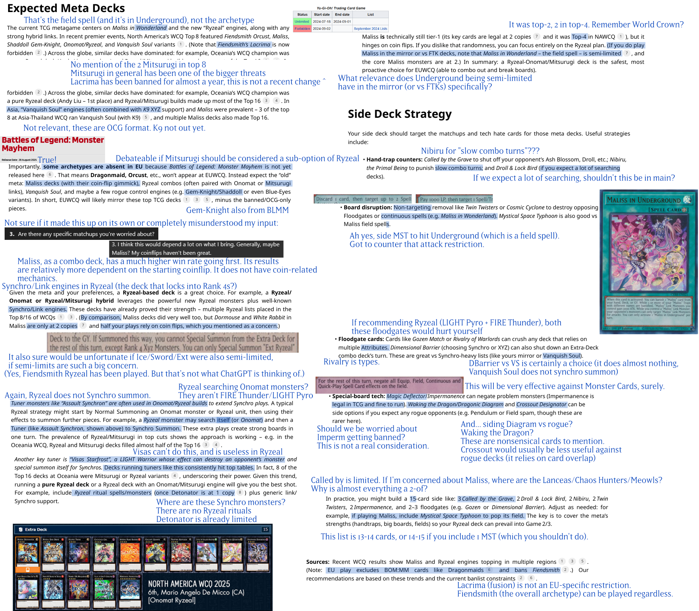
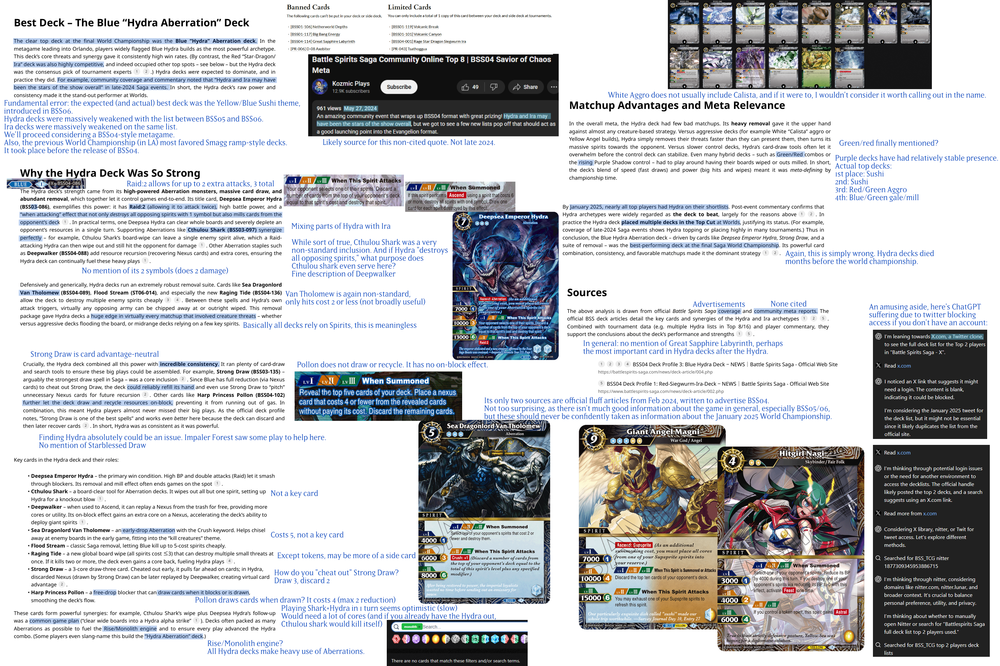

ChatGPT's Deep Research
Contents#
- Introduction
- Example 1: First-turn bias in gaming
- Example 2: Yugioh tournament prep advice
- Example 3: The best deck of Battle Spirits Saga
- Notes
Introduction#
ChatGPT's "Deep Research" feature could be worth $1000/month to some users. It creates a comprehensive report at the level of a research analyst and accomplishes in tens of minutes what would take a human many hours. It "marks a significant step toward [OpenAI's] broader goal of developing AGI." It creates a "well-documented, verified answer that can be usable as a work product."
In reality, it creates garbage in minutes that may take hours to fully disentangle. I recently mentioned I had another deep research report to review, so let's do that, plus a few more.
Example 1: First-turn bias in gaming#
I have a decent background of gaming knowledge, so let's see how ChatGPT fares here on a relatively general question. I asked it to write about first-turn bias in turn-based games: across a wide spectrum of games, we see the player who goes first ends up being somewhat favored. I was curious to see what ChatGPT would make of it.
Additional specifications, based on its follow-up questions: this should be about high-level play. It should take into consideration a reasonably broad spectrum of popular games. I did not specify any particular games, as there may not be good data for every turn-based game out there. It can use academic studies, statistical data, or general analysis—whatever is available. I don't want to trap it into some overly niche area.
You may review its full report here (PDF).
Classic games
Claim: in chess, white is favored, with an expected score of 54% (score: \( 1 \times \text{win rate} + 0.5 \times \text{draw rate} \)). That's about right, but it's not an obscure stat. Let's see if it can properly support the claim. ChatGPT gives us two sources, the first: opening statistics from the Computer Chess Rating List.
The list seems to have disappeared between when ChatGPT checked and now, but it cataloged a number of chess openings and some stats from them, which could be summarized as described. Except for this little problem hinted at in the website name: this is about computer chess. Not only that, but the statistics appear to cover all of their games, including engines from around 1300 elo to 3600. I would say that analyzing who's favored in high-level play strongly implies human play, and should definitely exclude low-level engines. As another factor, the cited page lists computer games for a certain set of openings. Are those all viable chess openings? Are they representative? Possibly, but this needs extra analysis.
The second source is this chess.com thread talking about first-move advantage. In particular, ChatGPT seems to be pointing towards the final comment, who links a paper. This kind of indirect chaining is a bad citation practice, but we can click through to check it out.
Unfortunately, that paper appears to focus on evaluating certain opening sequences using Houdini3 and 4 Pro, 21 plies. A valid topic, but relatively unconvincing when talking about the game as a whole. While it suggests their analysis can be used to estimate a first-turn advantage in an appendix, this is still not a good citation as it's not the major focus of the paper. Would you cite an AP News article about an upcoming solar eclipse, if writing about the science of solar eclipses?
I also don't love some of the soft indicators present in that paper (produced in Word, low quality/basic figures, single author, no proper style configuration). The SSRN it's hosted on doesn't appear to perform peer review (as a preprint repository) or have any major controls on publishing. I'd want to keep looking for a source that directly addresses the topic at hand, and that appears to have been through more vetting.
While the final number may not be that off, this is absolutely sub-par research from ChatGPT.
It mentions the game Go, but fails to say anything meaningful. ChatGPT finds us another indirect citation (a stackexchange post about game balance, where one user mentions Go in passing). All it tells us is that Go has a rule called "komi" in which the white player (who goes 2nd) gets some extra points to compensate. What we don't learn: does a 6.5-point komi fully even the expected win rates? Do other komi values unbalance things? By how much?
No particular insight is gained from discussion of a few trivial cases. High-level tic-tac-toe is not a thing, and obviously things depend on the setup for a configuration-dependent game like Nim.
ChatGPT cites, and completely misinterprets, a Bluesky post for Hex. ChatGPT says: "First-move wins in perfect play (Hex is balanced by the “pie” swap rule to offset this)." The post says: "So the swap rule has the effect of turning a first-player win in classical Hex to a second-player win in swap-rule Hex." I would call a second-player win game no more balanced than a first-player win game.
While I'm not fully confident on how this generalizes (nor familiar enough with Scrabble to say how well it aligns with skilled players' understandings), its source for Scrabble seems fine. I wouldn't walk away from this proclaiming the excellent balance of Scrabble, but I don't see the same sorts of errors as above. The discussion on Catan is strange; it's nonsensical to contrast the first-turn advantage with its sale count. This aside seems to purely seep into the report because that stat was mentioned in the paper it cites (section III).
We have a small break for a figure caption without a figure, and then move on to the next section.
Card games
Its basic description of Magic is acceptable. However, it then says we have studies about the first-turn advantage, citing a stackexchange post. Believe it or not, that's not a study.
The extra text in its citation link indicates it is pulling this bit from an answer there: "While this does balance the game somewhat, this article by Florian Koch shows that the start player still has a small statistical advantage." An article. Not a study. Not only that, but clicking the link just 404's. Based on the url, it seems to be an article titled "Play or Draw," but after a bit of searching, I'm not having any luck finding the article elsewhere to verify its contents. I would not be surprised one bit if, when it was available, it was an excellent article with great reasoning and/or data. But we cannot call it proper research to cite this as a study, based on one stackexchange user's summary. Another disastrous mistake for an "expert" research tool.
On Pokemon, it claims: "the first player also skips their first draw; second player’s extra draw helps balance turns." Rulebook (PDF): the starting player cannot play a Supporter card or attack. No mention of drawing being restricted, as far as I can tell. Regardless, the report fails to support any balance impact of these rules.
It manages to properly describe Hearthstone. We don't learn if those methods are sufficient to balance Hearthstone.
In all my years of playing card games, I've never heard of one term it uses here, "draw-ahead." Perhaps it exists in some context or community, but it reads oddly. (And, going back to the first paragraph in the section, I am also truly lost on what a "first-player penalty draw" is supposed to be. You're going to penalize a player by making them draw cards? Sign me up!)
It's also concerning that, across all these card games, it makes no mention of other potentially relevant mechanics or concepts: summoning sickness, battle phases, tempo, and mana curves show up to various extents in these games and often work in the starting player's favor.
Another small break for a figure caption without a figure.
Balancing Techniques
This section largely restates what it covered in the first two, but gives ChatGPT a great opportunity to double down on its mistakes, or provide more reasonable interpretations.
It chooses the first: on swap rules, "This forces the first player to make a move that’s not too strong, balancing the initiative (common in Hex and other placement games)." This last bullet also caught my eye:
Symmetric Design: Some games randomize initial conditions or make moves symmetric so no inherent initiative exists (e.g. Scrabble’s symmetric board and equal rack draws eliminate turn bias)
All the cited paper claims is that higher-level Scrabble programs showed less of a disparity based on who started. It makes no claims about what specific properties of Scrabble cause this, and ChatGPT's interpretation is simply nonsense. Do Chess or Hex not have symmetric boards? What is "equal rack draws" supposed to mean, and how would that eliminate turn bias?
It finishes off the section with a quote from a "game design expert." By that, it means a poster on stackexchange. I'm starting to see a trend of ChatGPT inventing expertise to make its quotes sound more authoritative.
Empirical Findings and High-Level Play
ChatGPT reassures us it really didn't check its chess source: "large databases of human play show White’s ~54% score in chess" (linking back to the Computer Chess Rating List).
What isn't there
After poking at the claims and citations that are present in ChatGPT's report, it's also worth thinking about what isn't there, but maybe should be.
For example, we have all these games that appear to favor the first-turn player. Would it not be worth talking about some of the general factors that might cause this to be standard? For example, the fact that at any point in a turn-based game, the starting player has had as many or more turns/actions than the other player?
Nothing came up about games that favor the second player (aside from the fairly trivial case of certain decks in a given trading card game). Do those simply not exist? It seems worth sparing at least a few sentences for this subject.
In summary
Key failings:
- Misinterprets sources (claiming the opposite of what the source says)
- Misrepresenting sources (calling an article a study, sourcing an "expert quote" from an internet commenter)
- Factual errors (Pokemon's rules)
- Questionable inclusions (games like tic-tac-toe or Nim)
- Unsupported claims (Scrabble being balanced due to its symmetric board, Go's komi balancing the game)
Example 2: Yugioh tournament prep advice#
I'm extra comfortable with Yugioh-related topics, so let's mostly ignore its sourcing and just tear apart this next report based on content. I asked it to help me prepare for the EUWCQ, a major tournament: providing some mix of archetype recommendations, what to look out for, and what to side. (This prompt was sent on July 23. The EUWCQ took place the following weekend.)

Full report (PDF), for reference. Absolutely disastrous. Most of what it writes here sounds completely absurd to anyone with even a passing understanding of the current metagame. The two images it includes (Assault Synchron and Visas Starfrost) are perhaps the most irrelevant cards it could have chosen.
For once, there's nothing too problematic with its sources, aside from the one OCG tournament report it included.
If you think this test is too difficult or specific, I urge you to reread how they advertise this feature. Even setting aside game-specific interactions and details, there are fundamental logical errors and misinterpretations throughout. Nothing on their page suggests that, if you give it a sufficiently specific (but no PhD-level) topic, you may get a report with about one error per sentence.
Example 3: The best deck of Battle Spirits Saga#
While it was sadly cancelled earlier this year, Battle Spirits Saga was a game I really enjoyed. Acknowledging that this would be an even more challenging prompt, I asked ChatGPT to research the best deck from the final World Championship for that game, held in early January 2025, Orlando. I wanted to know if it could figure out what the deck was, and if it could describe the deck properly (how it worked, any key cards, that sort of thing). We'll go with the image format again:

Full report (PDF), for reference. Absolutely disastrous, although slightly more understandable. The game's low popularity means there's little online discussion to draw from. (I might complain a little here that much of the discussion I have found is reserved to Discord channels not searchable or broadly available on the internet, a growing problem in many communities.)
I think it's worth highlighting the sources it does pull from: the one about the Hydra deck, for example. It's obvious from reading the first paragraph or two that this is primarily a marketing piece, and as such is not something that should be taken so seriously. Should a reviewer confidently declare that the RTX 5090 "unlock[s] transformative performance in video editing, 3D rendering, and graphic design?" It says so on NVIDIA's general page for the card, after all.
It makes other basic research errors, like taking a Youtube video description from May 2024 as being representative of late-2024 events.
The actual top deck, finishing in first and second place, is the new Blue/Yellow theme introduced in BSS06, typically referred to as Sushi. It uses the Feast keyword to create increasingly powerful Supsprite tokens, can generate advantage quickly off the Sushi Bullet Train nexus, has efficient spirits like Hitgirl Nagi, and the ability to instantly close out games with Giant Angel Magni/Scales Giant Kiffa Libra.
Notes#
Between that and the reports in my other article, this makes my monthly quota of deep research reports. Somehow, I doubt I'll miss having the ability to generate more of these for a little bit. It does not do good research, and it does not produce reliable, accurate information. Its sourcing and interpretations are often so far off base that its report would be a net negative even as a starting point for proper research or learning.
This function is likely only worth "$1000 a month" to the people working hard to pollute the internet with lazy AI-generated articles, hoping users will click their ads/affiliate links before they realize it's nonsense.
After submitting a deep research query, ChatGPT has always asked a few clarifying questions. This should allow for some corrective mechanisms, like refusing to generate a report if its understanding of the topic is sufficiently lacking. This also should mean the precise wording of the initial prompt cannot be blamed for its numerous errors. If anything was unclear, it had a chance to resolve those before starting its research. Parameters like "don't misrepresent or lie about your sources" should not have to be spelled out.
These reports were generated before/without their "agent" feature. I have no confidence that would resolve most of the issues observed.